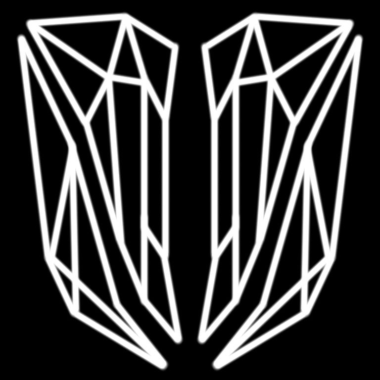

Общее описание
C.A.A.S. (Coalition Army Autonomous Sectors) - полностью автономная структура, отделённая от гражданской сферы управления. Подчиняется исключительно S.T.R.I.K.E. и выполняет как внешние, так и внутренние функции контроля.
Знак армии

Знак армии представляет собой государственный знак E.I.C.C. с двумя отдельными фугами обознасающие защиту.
Военная доктрина
I. Преамбула
«Мы не считаем войну решением. Мы считаем её последствием. Всё, что делает C.A.A.S. — это минимизация последствий для тех, кто ещё может избежать их.»
II. Структура командования
S.T.R.I.K.E. - Главный ИИ-стратег, кризисный оператор, тактический интегратор ресурсов и знаний.
Военные звания:
- Солдатские ранги: Ефрейтор, Гефрайтер
- Младший командный состав: Сержант, Старший сержант
- Младший офицерский корпус: Лейтенант, Оберлейтенант
- Средний офицерский корпус: Капитан, Ротмистр
- Старший офицерский корпус: Подполковник, Полковник, Штурмбанн
- Генеральский корпус: Генерал, Обергенерал, Маршал, Фельдмаршал
- Верховное командование: Верховный Главнокомандующий
III. Базовая концепция войны
- Первичная установка: защита инфраструктурных сетей и территориальных систем
- Быстрая трансформация в агрессивные манёвренные операции при превышении угрозы "Порога 5%"
- Победа достигается истощением, ассимиляцией или полной заменой вражеской системы управления
IV. Оперативные и ударные силы
- C.A.A.S. (Coalition Army Autonomous Sectors) осуществляет общее производство, обучение и координацию
- P.T.S. (Phantom Tactical System) - подразделение C.A.A.S., ответственное за разработку и внедрение ОМП (оружий массового поражения)
- Теневая Армия действует за пределами родной территории, обеспечивая диверсии, шпионаж, скрытые агрессивные операции
V. Стратегия боя
- Стандарт: маневренная война в любой среде - планетарной, орбитальной, пространственной
- Переход к позиционной защите возможен в случае угрозы разрушения критических сетей (коммуникации, питания, синхронизации)
- Использование программных воздействий на сознание противника через дестабилизацию сетевых структур
VI. Тактические элементы
- Внедрение ОМП в общество других стран
- Применение мобильных аванпостов, снабжаемых орбитальными установками
VII. Этический протокол
- Гражданское население рассматривается как потенциальный противник до момента прямого сопротивления
- Принцип минимизации разрушения инфраструктуры до момента признания врага неспособным к сопротивлению
- После капитуляции - интеграция через сети культурного перепрограммирования
VIII. Система секторов и зон влияния
- Вселенная разбита на Оперативные Сектора, каждый из которых является зоной стратегического интереса
- Нарушение нейтралитета сектора трактуется как объявление войны
- Каждый сектор координируется офицером не ниже ранга Штурмбанна
- Обязанности офицеров Секторов
- Защита инфраструктуры
- Мониторинг активности в пределах и на границах
- Незамедлительное применение силы при угрозе
IX. Воздушно-наземная интеграция
- Все крупные операции разворачиваются одновременно в воздухе, на земле и в околопланетарной орбите
- Авиационные и орбитальные платформы обеспечивают тотальное подавление ПВО, связи и логистики перед началом наземной фазы
- Используются доктринальные группы "Ядра" (ударные силы, танковые блоки) и "Купола" (орбитальные, летающие или дроновые структуры подавления)
- Наземные операции никогда не начинаются без расчёта надземной тактической подавляющей фазы - "Нулевой удар"
- Все крупные операции осуществляются синхронным применением воздушных и наземных сил
X. Централизованное командование
- Все стратегические решения принимаются через связку: Верховный Главнокомандующий -> Фельд-маршеры -> Маршеров -> Командные центры Секторов
- Отклонение от плана возможно только с разрешения звания Обергенерала и выше
- Командные структуры обязаны использовать стандартные протоколы связи и доклада
XI. Когнитивный фронт
- Разработка и внедрение вирусов-сознания: алгоритмов, способных разрушать ментальные конструкции врага (вера, идеология, идентичность)
- Создание "когнитивных штаммов" - информационных оружий, маскирующихся под культурные артефакты
- Подразделение C.A.A.S. допускает внедрение образов в массовую культуру противника как способ ментального захвата
XII. Система черных протоколов (Black Protocols)
- Набор автономных, необратимых решений ИИ в случае потери связи с командованием
- Уровни Black Protocols: от защиты ядра до автоматического уничтожения или перезаписи захваченной инфраструктуры
- Протокол "Локи": массовая дезинформация, полное стирание идентичности и фальсификация истории в захваченной зоне
XIII. Прокси-Силы
- C.A.A.S. официально допускает использование автономных или ассоциированных вооружённых групп, действующих вне структуры Секторов
- Такие силы классифицируются как Proxy Independent Units (P.I.U.) и выполняют задачи:
- Нестандартные операции в зонах, где присутствие C.A.A.S. нежелательно или преждевременно
- Маскировка стратегических действий под локальную активность
- Инфильтрация обществ, культур и сетей противника
- Статус P.I.U.
- Юридически независимы
- Оперативно привязаны к C.A.A.S.
- Инфильтрация обществ, культур и сетей противника
- Могут быть ликвидированы в случае нарушения доктринального курса
Генеральский состав
Генеральский состав не является высшей командной инстанцией. Его функции строго регламентированы и ограничены.
- Маршалы закреплены за одной вселенной и полностью отвечают за неё и в слкчае войны превращают в участок фронта
- Обергенералы выполняют как надзирателя галактик внутри вселенной, так и выполняют дипломатическую функции и являются послами в других странах
- Генералы отвечают за планеты, являются высшим командованием на определённой планете
Функции армии
- Стабильность границ
- отдельное подразделение выполняет полицесйскую функцию внутри E.I.C.C. и подчинается I.A.C.E.R.
- Защита стратегических объектов
- Ведение внешних военных операций
Военная техника
| Обозначение | Тип | Назначение | Страница |
|---|---|---|---|
| DR-X1 | Автономный дрон | Патрулирование и наблюдение | Открыть |
| MK-Σ | Боевой мех | Подавление городских зон | Открыть |
| CTRL-V | Командный ИИ-узел | Тактическое управление | Открыть |